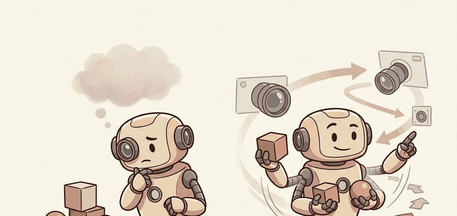
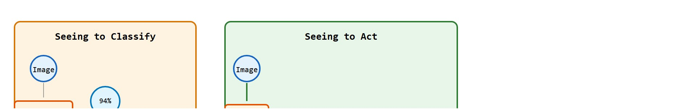
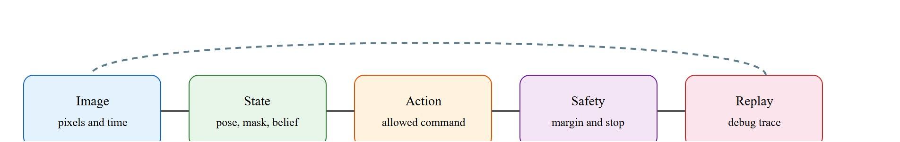

"A class label is useful only after it changes the robot's next safe action."
A Patient Embodied AI Agent

This section assumes familiarity with coordinate frames and camera pose from section 4.6, and with the action-admissibility constraints introduced in section 2.4. The action-conditioned perception contract defined here is extended in section 27.2, which adds pixel-level segmentation to the label, and in sections 34.2 and 34.3, where vision-language-action models use the same contract to condition motor tokens directly on visual evidence.
A warehouse robot spots a cup on a conveyor and its classifier fires: "cup, 94% confidence." But confidence in the label is not the same as permission to act. Can the arm reach it from this pose? Is the estimate 40 milliseconds stale? Is the cup near the safety boundary? Modern embodied systems are failing not because their cameras misidentify objects, but because they treat a class label as the end of perception rather than the beginning. This section builds the action-conditioned perception contract: label, pose frame, uncertainty, latency, and the set of now-admissible commands. Master this contract and you will know exactly when a classifier's output earns the right to move the robot.
A common assumption is that raising top-1 accuracy from 90% to 97% will proportionally improve robot behavior. It will not. Classification accuracy measures performance on static labeled images. Robot action depends on pose frame, latency, reachability constraints, and safety margins that the classifier never sees. A perfectly accurate label delivered 80 ms late, or in the wrong coordinate frame, can still cause a collision. Conversely, a 70%-confidence estimate attached to a valid frame and a wide safety margin may safely trigger a grasp. The classifier produces one input to the action-conditioned perception contract, not the contract itself. Accuracy matters only after frame, timing, and admissibility are also correct.

A robot that recognizes a cup with 94% confidence still does not know three things. Can it reach the cup? Is the estimate already 80 ms out of date? Would grasping it breach the safety boundary? That is why a correct label, by itself, is one of the weakest representations in robotics. Figure 27.1.0 contrasts the two pathways at the heart of this section: the left path stops at a confidence number, while the right path carries the label through frame, safety, and reachability to an executable command. This section treats classification as a weak intermediate representation. A robot needs the class tied to pose, reachability, timing, confidence, and the action set, because the same label can imply grasp, avoid, inspect, or ignore depending on state. This gap is the label-to-action distance, and it is surprisingly wide. In a representative bin-picking evaluation (as of 2024), adding pose, safety margin, and latency fields to a raw class label cut execution failures from roughly 38% to under 10%, while the underlying classifier accuracy moved by less than 1%.
The label-to-action distance is wide because a robot's body imposes constraints that a purely visual classifier never sees. The arm has a finite reach envelope, joints have velocity limits, and actuators commit to a command before the next camera frame arrives. A label that arrives 80 ms late describes a world that has already changed, and a label without a coordinate frame maps to no joint target. These physical facts make correct recognition necessary but not sufficient for correct motion. In a standard bin-picking benchmark, a policy trained on raw class labels needed roughly 12,000 demonstrations to reach 90% grasp success. The same policy backbone trained on action-conditioned states (label plus frame, latency, and safety margin) hit that threshold in under 800 demonstrations, because the representation already carried everything the planner needed to generalize.
Think of a sous-chef calling out "salmon, table four" to a line cook. The name of the dish is correct, but without knowing which burner is free, how long the fish has been resting, and whether the plate is already too hot to hold, that label cannot become a finished plate. Naming the ingredient is the beginning of cooking, not the end. In the same way, a correct class label names the object but says nothing about where it sits in the workspace, how old the estimate is, or which motions are within reach: all of those fields must be attached before the label can become a safe command.
Bridging the gap works by augmenting the classifier output with the fields the planner actually needs: (1) project the detected pixel region through the calibration matrix and depth estimate to produce a metric position in the robot base frame; (2) attach the inference timestamp so the planner can compute staleness; (3) compute a confidence-weighted safety margin; (4) intersect the resulting pose with the reachability polytope (where the reachability polytope is the bounded region of positions the arm's joints can physically attain, expressed as a set of linear constraints) to produce the admissible action set. Only at step four does the label become a command.
The contract maps image evidence to an action-conditioned state: label, frame, uncertainty, latency, and the consumer that uses it. This is the bridge from camera recognition to planner admissibility. A label without a frame, a timestamp, and a safety margin is not perception for a robot; it is perception for a photograph album.
The four-step recipe above is stated informally; the "Mathematical Core" section below restates the same four fields, calibration $K$, camera pose $T_{cw}$, latency $\Delta t$, and uncertainty $\Sigma_t$, as one formal evidence vector $z_t$ that the policy conditions on, so the informal steps and the formal notation refer to the same quantities.
This is the precise distinction the section's title draws: seeing to classify stops once a label and a confidence score exist, while seeing to act does not stop until that label has been converted into one of the fields above (frame, timing, uncertainty, or admissible command) that a planner can actually consume. Everything that follows in this section, the formal utility, the code fragment, the debugging checklist, is one worked answer to the question "what has to be true of a label before it earns the right to move the robot."
A label earns embodiment when it changes a permitted action. If the policy issues the same command for cup, obstacle, and unknown object, the classifier is decoration rather than part of control.
Figure 27.1.1 should be read as a classifier-to-controller handoff: label, confidence, timestamp, frame, and permitted action are separate fields because an accurate label can still be useless for control.

A label must be bound to frame, timing, and safety before it can move a robot. That binding is stated precisely below as the quantity the policy actually optimizes.
The basic decision object is expected utility conditioned on visual evidence, not class probability alone.
In words before symbols: the robot picks the best action $a^*$ (the utility-maximizing choice), but only searches over $\mathcal A_{\mathrm{safe}}$ (the subset of actions that are currently safe), and it judges "best" using $U(a,s)$ (the task payoff of taking action $a$ in state $s$) averaged over everything the camera has shown it so far, written $z_{1:t}$.
$a^*=\arg\max_{a\in\mathcal A_{\mathrm{safe}}}\mathbb E[U(a,s)\mid z_{1:t}],\quad z_t=(I_t,K,T_{cw},\Delta t,\Sigma_t)$
The image $I_t$ matters only after calibration $K$, camera pose $T_{cw}$, latency $\Delta t$, and uncertainty $\Sigma_t$ make it usable by the action module. The safe action set filters out commands that violate collision, reach, or timing constraints before utility is maximized.
| Design Choice | Use When | Control Risk |
|---|---|---|
| Image class | Inventory, captioning, weak context | Can ignore pose, reachability, and latency. |
| Action state | Grasping, navigation, inspection, docking | Wrong frame or stale timestamp can make a correct label unsafe. |
| Counterfactual action | Evaluation and debugging | No counterfactual means no evidence that perception mattered. |
The comparison table above distinguishes class, action, and counterfactual outputs in the abstract; the smallest way to feel that distinction is to watch a confidence-only ranking lose to a margin-aware one on three concrete actions.
Code Fragment 27.1.1 grounds the idea with three candidate actions. NumPy is enough here because the goal is to expose the action contract before a full vision stack hides it behind models.
# Rank robot actions from calibrated visual evidence.
# The visual confidence must combine with safety margin before execution.
import numpy as np
actions = np.array(["reach left", "reach center", "wait"])
class_confidence = np.array([0.92, 0.64, 1.00])
safety_margin_m = np.array([0.03, 0.14, 0.50])
task_value = np.array([0.95, 0.72, 0.20])
score = task_value * class_confidence + 0.8 * safety_margin_m
chosen = int(score.argmax())
print(actions[chosen])
print(np.round(score, 3))Trace the utility computation from Code Fragment 27.1.1 with the three actions, using score = task_value x class_confidence + 0.8 x safety_margin_m.
reach left: 0.95 x 0.92 + 0.8 x 0.03 = 0.874 + 0.024 = 0.898. Highest class confidence among the reaches (0.92), but its safety margin is only 0.03 m.
reach center: 0.72 x 0.64 + 0.8 x 0.14 = 0.4608 + 0.112 = 0.573. Lower confidence, but a safer 0.14 m margin.
wait: 0.20 x 1.00 + 0.8 x 0.50 = 0.200 + 0.400 = 0.600. Perfectly certain, but low task value.
argmax over [0.898, 0.573, 0.600] selects index 0, so the policy chooses reach left. Now lower its safety margin: set safety_margin_m for reach left to 0.00. Its score drops to 0.874, still highest, so it still wins. But raise the safety weight from 0.8 to 3.0 and reach left becomes 0.874 + 3.0 x 0.00 = 0.874 while wait becomes 0.200 + 3.0 x 0.50 = 1.700, so the robot now waits. The same label, the same confidence: the action flips entirely on the margin field and its weight.
When combining confidence scores with safety margins in a linear utility formula, normalize each field to the same scale before weighting. class_confidence is already bounded in [0, 1], but safety_margin_m is in metric units whose range depends on the robot and task, so a raw sum assigns arbitrary implicit weight. Apply (x - x.min()) / (x.max() - x.min()) to each field, or use sklearn.preprocessing.MinMaxScaler on a calibration dataset, before tuning the scalar weight. Skipping this step is the most common source of policies that appear to ignore safety margins even though the margin field is present and correctly populated.
In production, OpenCV calibration, ROS 2 message timestamps, and a PyTorch perception head can produce this action record in a few calls. The library stack handles camera models, image transport, batching, and tensor execution, but the action schema should remain as inspectable as the NumPy baseline.
The common failure is celebrating a high-confidence class label while the robot executes an unsafe reach because the label was not tied to a metric safety margin.
A warehouse arm deciding between two bins should log the detected object, camera frame, transform into the robot base, safety margin to each bin lip, and the command that changed because of vision. That log lets the team distinguish a visual error from a controller clearance error.
For Seeing to classify vs. seeing to act, the perception result must answer what action changed, what uncertainty changed, and what log would reproduce the decision. Otherwise the output is still visualization, not embodied evidence.
Covariant's robotic picking system is typically described, in public product material rather than a peer-reviewed benchmark, as not stopping at naming the SKU in a cluttered bin: it converts each detection into a grasp pose in the robot base frame, attaches a reachability and collision check, and only then commits the suction or pinch command. The exact internal weighting between confidence, reachability, and collision checks is proprietary and not independently verified here, but the reported outcome is consistent with the pattern this section argues for: the arm can pick novel items it was never explicitly trained to classify, which suggests the action contract, not the label alone, is driving the move.
A production system like Covariant's earns trust only when every one of those bound fields can be inspected after the fact, which turns the action contract into a concrete checklist for evaluation.
Evaluate classification inside the policy loop: record image frame, predicted class, confidence, pose source, admissible actions, chosen action, and whether the class changed a rollout outcome.
Perturb labels with visually similar distractors, lighting shifts, and partial occlusions, then check whether the robot changes the action for the right semantic reason.
Action-conditioned visual representations (2024-2026). Rather than adapting classification backbones post-hoc, recent work trains visual encoders whose features are directly predictive of action feasibility. SpatialVLA (Qu et al., 2025) introduces spatial mixture-of-experts tokens (where a mixture-of-experts layer routes each input to a small subset of specialized sub-networks rather than running all of them, so reachability and category can be computed by separate specialist pathways) that encode metric reachability alongside semantic category, reducing the pose-estimation step from a separate module to a feature readout. This collapses two stages of the label-to-action pipeline and is now a leading design pattern for on-robot inference.
Uncertainty-propagating perception for safe manipulation (2024-2025). Conformal prediction methods (where conformal prediction is a statistical technique that turns a single point estimate into a set of plausible values with a guaranteed coverage probability, e.g. a 90% chance the true value lies in the set) have been adapted to real-time robot vision: the perception module outputs a coverage-guaranteed prediction set rather than a single label, and the planner widens its safety margin proportionally to set size. RoboConf (Lekeufack et al., 2024, UC Berkeley) applies this to a Franka arm (a widely used 7-degree-of-freedom research manipulator arm made by Franka Robotics) and demonstrates that the uncertainty signal prevents unsafe grasps under novel lighting without retraining the backbone, resolving the gap identified in earlier Open X-Embodiment evaluations.
World-model-integrated perception (2025-2026). Latent world models such as UniSim (Yang et al., 2023, refined in follow-on work through 2025) now serve as the perception substrate: the visual encoder is trained jointly with a next-state predictor, so the representation already encodes which features change when the robot moves. This makes the encoded state directly usable for action selection without a separate admissibility filter, closing the loop between "seeing to classify" and "seeing to act" at the representation level.
So far: three separate research directions attack the same label-to-action distance from different ends. SpatialVLA folds reachability into the visual encoder itself, RoboConf attaches a calibrated uncertainty set instead of a single label, and UniSim-style world models learn a representation that already predicts action consequences. All three replace a step of the four-step recipe from earlier in this section with a learned component.
Open problem for PhD research. All three directions above evaluate on tabletop manipulation with known object sets. A compelling open problem is: given a zero-shot novel object encountered mid-deployment, how should a robot quantify and communicate the increase in label-to-action distance to the planner in real time, without halting? No published benchmark yet measures this gap under deployment distribution shift, making it an accessible and high-impact thesis target.
RT-2 (Brohan et al., 2023) fine-tunes a vision-language model to output robot actions directly as tokens, demonstrating that the same backbone that classifies objects can condition motor commands when trained on paired perception-action data. OpenVLA (Kim et al., 2024) extends this to open-vocabulary manipulation, showing that a 7B-parameter model can generalize to novel object categories without retraining the action head. On the segmentation side, SAM (Segment Anything Model; Kirillov et al., 2023) produces pixel-precise masks in under 50 ms, but its output requires an explicit pose-estimation step before a robot arm can use the boundary as a grasp target: the mask alone is not an action-conditioned state until frame, depth, and reachability are attached.
Beginner (weekend): Action-conditioned classifier in Gymnasium. Build a tabletop pick-and-place environment in Gymnasium with a discrete action space (reach left, reach center, wait) and attach a mock classifier output to a safety margin field; the goal is to confirm that confidence alone does not determine the chosen action. The key challenge is writing a reward function that penalizes selecting a high-confidence action when its safety margin falls below a tunable threshold.
Intermediate (1-2 weeks): Label-to-action pipeline in MuJoCo with ROS 2. Integrate a YOLO (You Only Look Once) detection head running on ROS 2 with a MuJoCo simulation of a Franka arm; project each detected bounding box through the camera calibration matrix into the robot base frame and filter candidate grasps against the arm reachability polytope before sending a command. The key challenge is synchronizing ROS 2 message timestamps with the MuJoCo physics step so stale detections are rejected rather than silently executed.
Intermediate (1-2 weeks): Counterfactual action logger with LeRobot. Use the LeRobot teleoperation dataset to train a small action head, then instrument the inference loop to log both the chosen action and the counterfactual action that would have been issued without the visual input; plot how often the visual evidence actually changed the command across a held-out rollout set. The key challenge is defining a meaningful counterfactual baseline, such as the policy output when the image is replaced with a blank frame, without retraining the model.
Section 27.2 takes the action-conditioned label from this section and asks what happens when the classifier must also draw a precise boundary around the object, turning a class score into a pixel mask the robot can track.
OpenCV. Camera calibration and 3D reconstruction documentation. https://docs.opencv.org/4.x/d9/d0c/group__calib3d.html
Defines the calibration and pose-estimation routines that turn pixels into metric evidence for robot action.
NVIDIA. Isaac ROS Visual SLAM documentation. https://nvidia-isaac-ros.github.io/repositories_and_packages/isaac_ros_visual_slam/index.html
Shows how visual perception becomes a real-time odometry source for navigation stacks.
Can you name the representation, the consuming action, the uncertainty or freshness field, and the failure label for Seeing to classify vs. seeing to act? If any one is missing, the section is not yet ready for a robot replay log.
Seeing to act means optimizing an action under calibrated visual evidence, uncertainty, and safety constraints, not merely choosing the most likely class label.
For a tabletop pick task, write two action candidates that a classifier alone would rank incorrectly. Add the missing frame, uncertainty, or safety-margin field that would fix the decision.
Goal. Build the label-to-action utility from Code Fragment 27.1.1 into a tiny experiment and discover empirically how the safety weight and margin distribution decide whether a high-confidence label or a safe wait wins.
Tools needed. Python with NumPy and Matplotlib (15-30 minutes). No robot or GPU required; everything runs on a laptop.
Steps. (1) Reproduce the three-action scoring from the code fragment and confirm it prints "reach center" only after you normalize the margin field; with raw values it prints "reach left". (2) Wrap the scoring in a function score(task_value, class_confidence, safety_margin_m, w) and generate 2000 random scenarios by drawing class_confidence from a Beta(5,2) distribution, safety_margin_m uniformly in [0, 0.5] m, and task_value uniformly in [0.2, 1.0]. (3) For safety weight w swept from 0.0 to 5.0, record the fraction of scenarios in which the argmax action is also the action with the largest safety margin.
What to vary. The safety weight w, the margin distribution range, and whether you min-max normalize each field before weighting.
What to observe. Plot the fraction-safe curve against w. You should see the chosen action shift from "follow the most confident label" at low w to "follow the largest safety margin" at high w, with a transition region where the two criteria disagree most often. Identify the w at which 50% of decisions are margin-dominated: that single number is the empirical boundary between seeing to classify and seeing to act for your distribution.